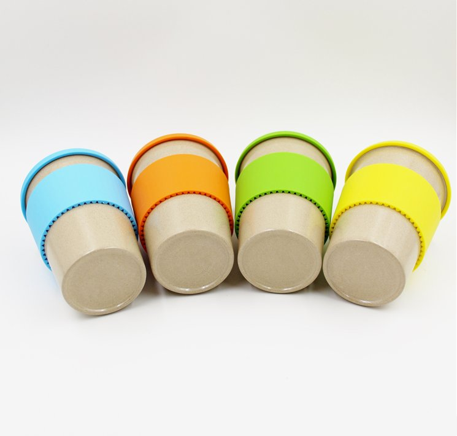
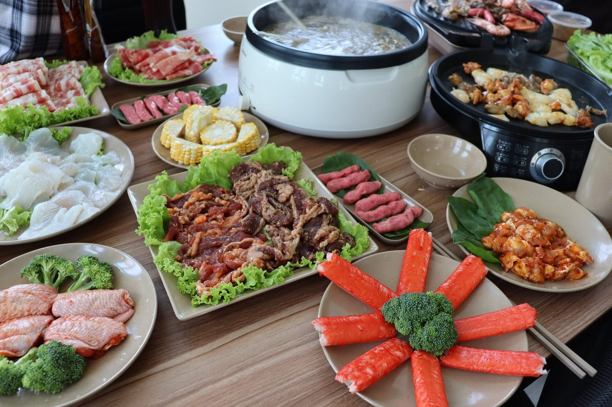
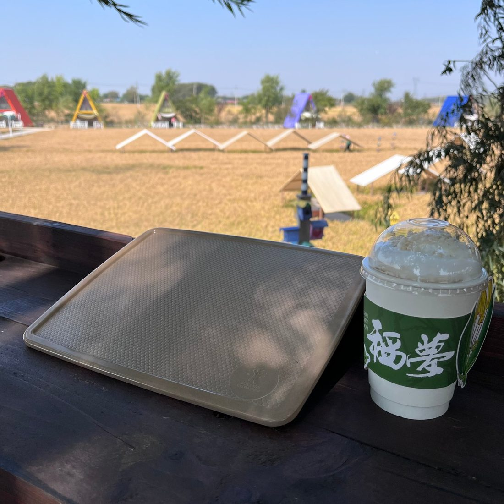
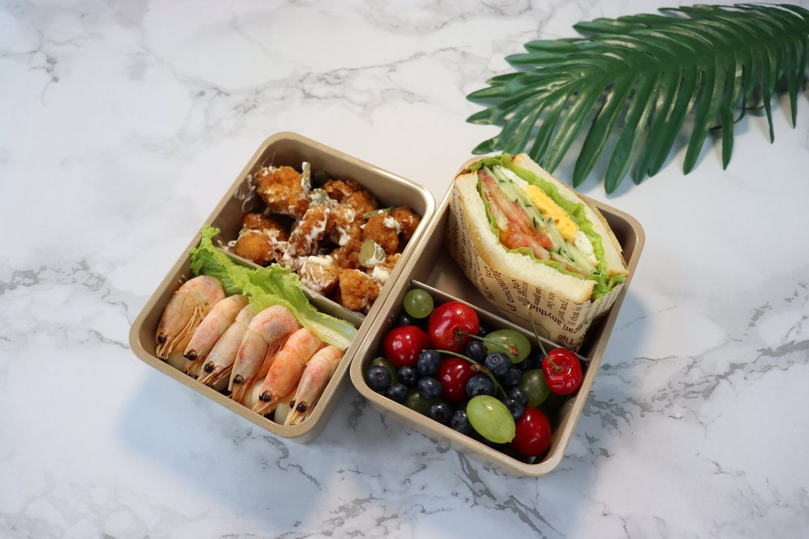
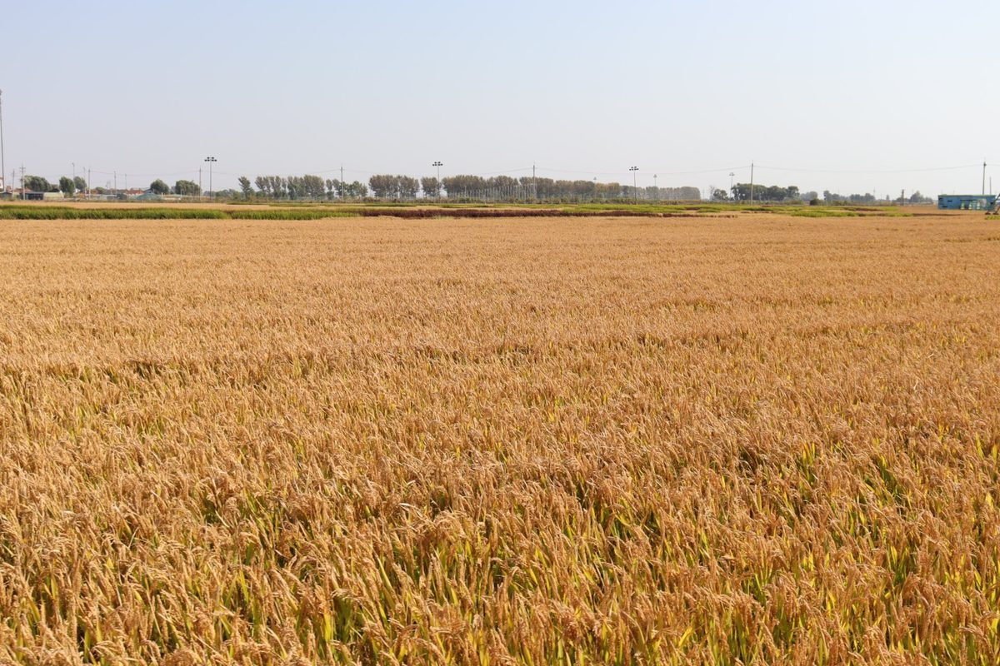

New Zealand's Plastic Phase-Out: What's Banned, What Got Delayed, and What Cafés and Holiday Parks Should Stock
New Zealand sells itself on "clean and green", and over the past few years the country has backed that brand with some of the most specific plastic rules in the world. Single-use plastic plates, bowls and cutlery are already banned. Since February 2024, kerbside recycling is the same everywhere in the country — and compostable packaging quietly lost its composting bin. For anyone supplying or running hospitality in Aotearoa, the buying decision has changed shape: the question is no longer "which disposable looks greenest" but "how much of the table can we make reusable". Here is where New Zealand's rules actually stand, what got pushed back, and what importers and hospitality buyers are stocking as a result.

Reusable plant fiber cups — the SKU category New Zealand café buyers reach for first.
What New Zealand Has Actually Banned — and When
New Zealand's phase-out runs under the Waste Minimisation (Plastic and Related Products) Regulations 2022, in three tranches. Tranche one took effect on 1 October 2022: PVC food trays and containers, polystyrene takeaway food and drink packaging, expanded polystyrene packaging, plastics made with pro-degradant additives, plastic drink stirrers and plastic-stemmed cotton buds. Tranche two followed on 1 July 2023: single-use plastic produce bags, plastic straws (with exceptions for accessibility and medical needs) — and, the item that matters most for our industry, single-use plastic plates, bowls and cutlery. These are sales and supply bans: businesses cannot provide or sell the items. Enforcement started education-first, but non-compliance can carry fines of up to NZ$100,000 per offence, and the public can report suspected breaches online.
For a Kiwi café, that second tranche is the one that bites. A dine-in plastic plate, bowl or fork is now off the menu by law. Most operators have already moved — some to "compostable" molded fiber disposables, some to ceramic, and a growing number to durable plant fiber tableware that looks natural on the counter and survives the daily rhythm of a busy cabinet-food lunch rush.
The Rule That Got Pushed Back — and Why the Direction Didn't Change
Honesty matters here, because a lot of supplier marketing still quotes a date that no longer exists. Tranche three was originally scheduled for mid-2025 and would have phased out all remaining PVC and polystyrene food and drink packaging. That deadline was removed at the end of 2024, and in March 2025 the government announced a revised waste strategy without a replacement date. As of late 2025, officials had reportedly made no final decision on a new timeline, with further updates expected. This article is general market information, not legal advice — confirm the current status with New Zealand's Ministry for the Environment or your compliance adviser before making sourcing decisions.
The delay affects packaging plastics — trays, containers, film. It does not undo anything: the single-use tableware bans from 2022 and 2023 remain fully in force, and no part of the pause targets reusable products. If anything, the uncertainty strengthens the case for reusables. An importer who built a product line around durable plates and cups has no exposure to whichever date the government eventually picks.
The Kerbside Reality That Changed the Buying Decision
While the phase-out headlines got the attention, a quieter rule from February 2024 reshaped New Zealand's waste math. From 1 February 2024, what can go into council kerbside recycling is the same across the country — and it is a short list: plastic bottles and containers marked 1, 2 or 5, glass, paper and cardboard, and metal cans. Everything else goes to landfill.
Here is the part many buyers missed: compostable packaging and fiber-based foodware are no longer accepted in kerbside organics collections either. Councils pulled them because commercially compostable materials do not reliably break down in their composting systems and contaminate the output. So the "compostable" single-use plate a café bought to feel responsible is, in most of New Zealand, landfilled — same as the plastic one, at a higher price. When we talk with distributors about this market, that fact closes more deals than any regulation: reusable is the only option on the table that actually leaves the waste stream.
Why Reusable Plant Fiber Fits the New Zealand Market
New Zealand hospitality runs on a few distinctive formats, and each maps to a specific reusable SKU. The flat-white café, from Auckland to Wellington to Christchurch, needs a dine-in cup that handles hot espresso drinks and repeated washing — our rice husk coffee cups are heat-pressed at high temperature into a dense composite, are BPA-free, and are cleaned with hand washing or a standard dishwasher cycle. Cabinet-food and counter-service spots lean on rice husk bowls and square plates that photograph well beside the display case. Family-friendly venues and community catering add compartment plates, and the lighter serving trays suit staff clearing tables all day.

Family-style dining and communal catering — one material across the whole table.
Then there is the format almost no other market has at the same scale: holiday parks and campgrounds. New Zealand's summer — December through February — fills hundreds of holiday parks, DOC campsites and beach baches with families cooking outdoors. Communal camp kitchens break ceramics and chew through disposables, which is why park operators and outdoor retailers buy unbreakable, lightweight dinnerware in bulk. A clip-top rice husk lunch box doubles as picnic gear and food storage for the same customer. Add school canteens and marae-style community catering, and you have a market where one material covers café, campground and canteen without changing spec sheets.

Field-side service at a holiday park — unbreakable tray and cup, no disposable waste left behind.

The clip-top lunch box doubles as picnic gear, school lunches and retail shelf stock.
Sizing the Order Around the Season and the Ship
For importers, the calendar matters as much as the SKU list. New Zealand's peak demand runs December to February, so a container needs to leave China by roughly September to clear the water, the port and the shelf before Christmas — the same window that drives Australian buyers, as we covered in our Aussie summer stocking guide. The second-best window is late summer: containers landing February to April let importers restock campground and school programs ahead of the cooler season, and factories usually still have the autumn rice harvest's fresh husk supply behind them. Factor in the Chinese New Year factory slowdown when scheduling samples and production, and use mixed-container planning to balance cups, plates and trays across one 40ft load — our container loading and MOQ guide walks through that math for US, EU and AU/NZ importers.

The autumn harvest in northeast China — the byproduct stream behind next season's husk supply.
The Documents to Ask For Before You Commit
New Zealand buyers are no different from buyers anywhere else in one respect: the claims on a supplier's website are worth exactly as much as the paperwork behind them. Before placing a bulk order, ask for the food-contact documentation for the specific SKUs you are buying — a migration test report, not a marketing PDF. Our tableware ships SGS tested for food contact, and we can supply supporting documentation including LFGB and REACH reports on request; if your program targets a specific retailer's requirements, tell us at the inquiry stage and we will confirm what can be provided. A supplier who hesitates on food-contact paperwork for the exact product in your container is telling you something. Our quality and testing page lists what we hold, and the material itself is covered in depth in our complete rice husk tableware guide.
Frequently Asked Questions
Is reusable rice husk tableware affected by New Zealand's plastic bans?
No. The bans target single-use items — plates, bowls, cutlery and straws designed to be used once and thrown away. Reusable plant fiber tableware is designed for years of service, is not plastic, and falls outside the scope of the phase-out. That is exactly why hospitality operators reach for it: it removes the compliance question instead of managing it.
Can we just switch to compostable single-use plates instead?
You can sell them, but understand the waste reality: since February 2024, New Zealand kerbside organics collections exclude compostable packaging, so most of it ends up in the landfill bin anyway. For dine-in service, a reusable plate that returns to the counter hundreds of times beats a disposable that is used once and landfilled — on cost per use and on the waste bill.
How should a New Zealand importer start a first order?
Start with a mixed sample shipment across three to four SKUs — typically cups, bowls, plates and trays — run them through your customers' real service conditions, then commit to a mixed container ahead of the season. Stock colors and logo options have different minimum order quantities; send us an inquiry and we will reply with the current structure in writing.
Sourcing reusable tableware for New Zealand hospitality or retail?
Tell us your market, target SKUs and container timing. We'll reply with a tailored quotation, our SGS food-contact test documentation and a sample proposal — custom logo and color options included from our 5,000 m² facility.
Send InquiryRelated reading
Three pages worth opening next, depending on what you are deciding.
- Restaurants and cafés — the six SKUs that earn counter space in a café, with the cost-per-use math shown.
- Hotels and hospitality — buffet, breakfast and room-service programs built around reusables.
- Canada importer's guide — how another English-speaking market turned its plastic rules into a reusable opportunity.
Published by Kaixin Eco Team · Shenyang Kaixin Technology Co., Ltd. — eco-friendly rice husk (plant fiber) dinnerware manufacturer since 2016, shipping to 40+ countries with full OEM/ODM support. Going deeper: explore our reusable coffee cups with custom branding, browse the full eco tableware range, or start from the Kaixin eco tableware homepage.